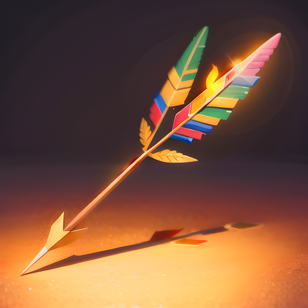
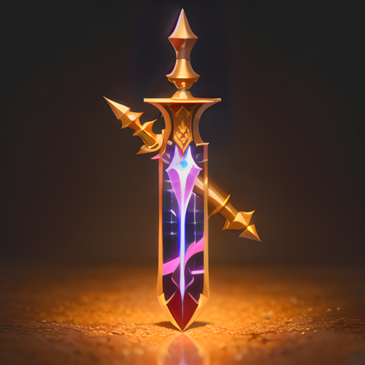
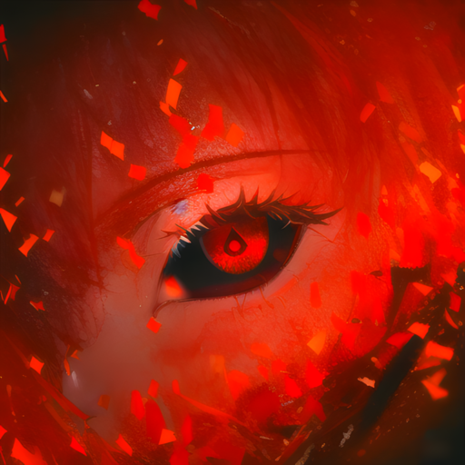
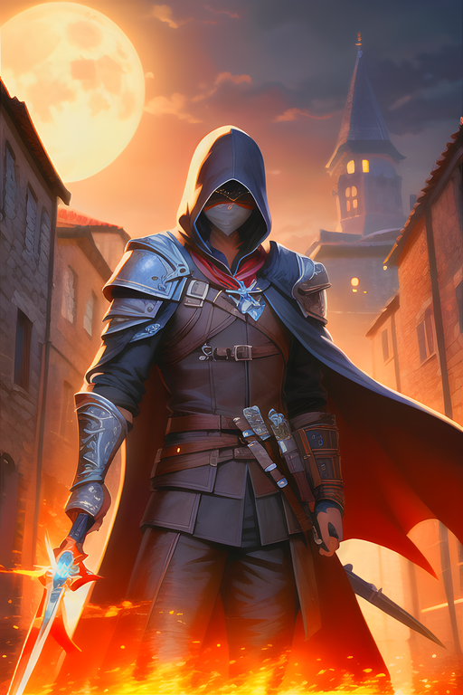

Les Assassins
Les Assassins

Dans l'univers d'Eternia, les Assassins sont des combattants redoutables qui ont été formés depuis leur plus jeune âge dans l'art de tuer. Ils ont été entraînés dans les arts de la furtivité, de l'infiltration et de l'assassinat, et ils sont capables de se fondre dans l'ombre pour surprendre leurs ennemis. Les Assassins d'Eternia sont des personnages agiles et rapides, capables de se mouvoir sans bruit et de se faufiler dans des endroits étroits. Ils sont des experts en combat à distance, maniant des couteaux de lancer et des dagues avec une précision mortelle. Les Assassins sont également des combattants mortels en corps-à-corps, utilisant leur vitesse et leur agilité pour éviter les attaques de leurs ennemis et leur infliger des coups dévastateurs. Les Assassins sont des personnages discrets, évitant les confrontations directes et préférant tuer leurs ennemis sans être vus. Ils possèdent une grande intelligence tactique, ce qui leur permet de planifier leurs actions avec soin et de neutraliser les ennemis les plus dangereux. Les Assassins d'Eternia sont des combattants complets, capables de s'adapter à toutes les situations et de mener à bien leur mission avec efficacité et discrétion. Ils sont des alliés précieux pour ceux qui cherchent à atteindre leurs objectifs sans être détectés.
Spécificité de la classe : 5% de discrétion supplémentaire

L'assassin sort rapidement son arc de son étui, l'empoignant fermement de sa main dominante. Ses doigts glissent facilement sur la corde de l'arc, et il saisit une flèche de l'autre main, la plaçant habilement sur la corde.
Le silence s'abat autour de lui alors qu'il se concentre intensément sur sa cible. Ses yeux se fixent sur sa proie, analysant sa position et cherchant le meilleur endroit pour frapper. En un instant, il tire la corde de son arc en arrière, décochant la flèche à une vitesse incroyable.
La flèche sifflant dans l'air, son trajet semble presque impossible à suivre. Elle se dirige droit vers la cible avec une force et une rapidité dévastatrices. L'ennemi ne voit que le mouvement flou de l'assassin alors que la flèche atteint sa cible avec une précision mortelle.
Le bruit sec de la flèche pénétrant la chair se fait entendre, suivi d'un gémissement de douleur alors que l'ennemi tombe au sol, touché mortellement. L'assassin recharge rapidement, prêt à attaquer à nouveau s'il le faut.
Puissance : 35 | Recharge : 1 tour
L'attaque furtive de l'assassin est une technique qui lui permet de se déplacer sans être détecté par ses ennemis. Avec une agilité surprenante, il se glisse dans l'ombre, laissant derrière lui une brise légère qui indique simplement sa présence. L'ennemi est alors pris au dépourvu lorsqu'il voit l'assassin surgir de nulle part, pour lui asséner un coup rapide et violent.
L'assassin est habile dans l'art de se dissimuler dans l'obscurité, ce qui lui permet d'obtenir un avantage tactique sur ses ennemis. Lorsqu'il utilise cette technique, il peut se déplacer avec une discrétion accrue, lui permettant de s'infiltrer derrière les lignes ennemies et de préparer une attaque surprise.
Après avoir porté son coup, l'assassin disparaît à nouveau dans les ténèbres, laissant son ennemi désorienté et incertain de la provenance de l'attaque. L'attaque furtive est une arme redoutable dans les mains d'un assassin expérimenté, qui sait utiliser l'obscurité à son avantage pour surprendre et vaincre ses adversaires.
Puissance : 45 | Recharge : 2 tours | Effet : +25% discrétion (3 tours)

Lorsque l'assassin esquive, il se déplace avec une agilité incroyable, évitant les attaques ennemies avec une fluidité presque surnaturelle. Il bondit d'un côté à l'autre avec une grâce et une élégance incomparables, esquivant les coups avec une facilité déconcertante.
La vitesse de l'assassin est augmentée, ce qui lui permet de se déplacer avec une rapidité et une précision accrues. Il semble presque flotter sur le champ de bataille, faisant tournoyer ses lames avec une dextérité impressionnante et prêt à contre-attaquer à tout moment.
Lorsque l'ennemi lance une attaque, l'assassin esquive avec une aisance déconcertante, se déplaçant rapidement et avec une précision chirurgicale pour éviter le coup. Cette technique est d'une grande utilité pour les voleurs qui cherchent à survivre dans des situations périlleuses, leur permettant d'éviter les coups et de riposter avec force. L'attaque "Esquive" est l'une des armes les plus redoutables dans l'arsenal de l'assassin, qui sait comment utiliser sa vitesse et son agilité pour dominer ses ennemis sur le champ de bataille.
Effets : esquive de la prochaine attaque, +25% vitesse (2 tours) | Recharge : 4 tours
Le Vol est une technique qui est devenue la spécialité du voleur. Elle tire son origine de l'histoire du peuple des voleurs, qui a été créé il y a de nombreuses années par des bandes de criminels qui ont pris l'habitude de voler les voyageurs sur les routes. Les voleurs étaient réputés pour leur agilité et leur capacité à se faufiler dans l'ombre sans être vus.
Au fil du temps, les voleurs ont développé une technique de vol de précision, en ciblant les poches des riches voyageurs et en y prenant leur or. Le Vol est une technique qui a nécessité beaucoup de temps et de pratique pour être parfaitement maîtrisée, mais qui est aujourd'hui devenue l'une des attaques les plus redoutées de la classe des voleurs.
Lorsqu'un voleur utilise le Vol, il se déplace avec une agilité remarquable, glissant sans être vu à côté de sa cible. D'un geste rapide, il saisit les poches de sa victime et en tire l'or qu'elle contient. L'ennemi, souvent surpris et déboussolé par cette attaque sournoise, ne peut que regarder impuissant le voleur qui s'échappe avec son butin. Bien que la technique soit souvent considérée comme malhonnête, elle est néanmoins très efficace pour se procurer des richesses et est devenue une arme redoutable pour les voleurs.
Effet : vol de la moitié de l'or ennemi | Recharge : 4 tours

L'Assassinat est considérée comme l'une des techniques les plus mortelles dans l'arsenal des assassins. Cette technique est réservée aux plus habiles et aux plus expérimentés des assassins, qui ont passé des années à perfectionner leur art de la discrétion et de l'assassinat.
Lorsqu'un assassin utilise cette attaque, il se fond dans les ombres, devenant presque invisible aux yeux de ses ennemis. Il s'approche silencieusement de sa cible, sans faire le moindre bruit, se glissant comme une ombre à travers les ténèbres.
Lorsqu'il est suffisamment proche, l'assassin surgit soudainement de nulle part, portant une attaque rapide et précise à sa cible. Le coup est si rapide et si mortel que la cible n'a souvent pas le temps de réagir avant de s'effondrer au sol, vaincue.
Mais l'assassin ne s'arrête pas là. Avec une habileté hors du commun, il se déplace rapidement vers sa prochaine cible, esquivant les attaques ennemies avec une aisance déconcertante. Il répète cette série d'attaques rapides et mortelles, éliminant ses ennemis un par un jusqu'à ce qu'il ne reste plus personne debout.
Cette attaque est redoutée par tous ceux qui la connaissent, car elle peut éliminer les ennemis les plus forts et les mieux protégés en un instant. Mais pour ceux qui maîtrisent cette technique, elle est considérée comme une arme ultime, capable de décimer des armées entières et de renverser des empires. Seuls les plus grands assassins de l'histoire ont été capables de maîtriser cette technique, et leur nom est resté gravé dans les annales de l'histoire en tant que légendes immortelles.
Effets : +50% discrétion, vitesse et défense (3 tours) | Recharge : 5 tours